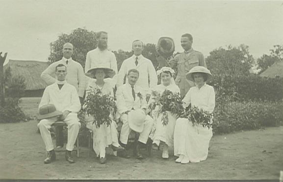
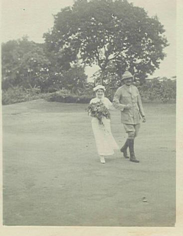

Published in 2007 and available on request
LOVE AT FIRST TOOTH:
Family and Missionary Politics In East Africa and Congo 1913-1934
By Robin Johnson
Dedicated to the Memory of Elizabeth Ann Flinn (née Thompson)
Contents
I The Life of Elizabeth Ann Thompson
II The Life Reuben Bishop Flinn
III The Heart of Africa Mission
IV The Africa Inland Mission
V Epilogue
Published by
Robin Johnson,
59 Allington Road, Wellington 6012, New Zealand
ISBN-13:978-0-473-11748-1
Preface
This little book is about the history of the Flinn family who were missionaries in the Northern Congo and the Sudan in the period 1913-1922, and later in Tanganyika 1924-34. The early part is about the family personalities involved while the latter part attempts to fill in the background as to why they were there. The title comes from the initial meeting of Mr and Mrs Flinn in the Congo and the competitive spirit among the different missionary societies in staking out their respective terrritories as the Belgians opened their borders to a somewhat hasty and adventurous invasion by these missionary groups. Actual quotes from surviving letters are shown in italics while peoples´ memories are shown in single quotation marks. The illustrations are taken from very old photographs (some in sepia prints) and were chosen to place this story in its original setting.
RJ
April 2007
1
Chapter I:
The Life of Elizabeth Ann Thompson
Biography
Born March 24 1889, Halifax, Yorks
St Marks Training Home, Islington 1915
Heart of Africa Mission 1916-18
Married Reuben Bishop Flinn 10 May 1918,Yambio, S. Sudan
Died March 1 1929, Mpwapwa, Tanganyika
Mother of Kathleen, Ruth, Patrick and Christopher
2
Memories of Kathleen Anderson [née Flinn]
‘Mother, one of five sisters and two brothers, was born in Halifax, Yorks; and the family moved to Wales around the turn of the century. The family owned a road contracting business. She worked in the PO and she stayed at the YWCA in Neath. While there, she went to an evangelist's meeting where the famous cricketer C T Studd was the speaker. This is around 1914-15. He made an appeal for workers to go to join him in the Congo. Many Christians believed in a second coming and that there was an urgency to preach the gospel to all the world. Mother was impressed so much that she thought she should volunteer for this mission to the Congo.’
‘My aunt, Mrs B Griffiths, wrote to me in 1983 and talked about this period of Mother's life’.
“My father was a waterworks manager in Halifax, Yorks., and when your mother was eight we moved to Briton Ferry, South Wales where he had a similar post supervising the building of a new water works. When that was finished he went into road contracting, pipe laying, and building easements on his own, but unfortunately died at the age of 50 in 1903. A brother took over the business and had to allow our mother something to run the home. He promised father he would not marry until we girls were old enough to work. However he didn´t keep his word, therefore Gran was the one who had to go short. She was wonderful and encouraged us to try to get on. Auntie Cis was able to get into the Post Office as a counter clerk and knew when there was a vacancy so your mother was next in and then Auntie Florrie. Then I was a shorthand typist in the local newspaper office but when another vacancy came I applied and also passed. This was a great help as we had free doctor if ill and also three months pay if sick and also a marriage gratuity. Your mother was promoted to be a Supervisor in Swansea Post Office Telephone Exchange and had to reside in Swansea because of this and lived in the Young Woman´s Christian Association Home . She was a staunch member of YWCA in Neath and although we were Church of England we also went to Forward Movement Hall which was run by Brother Frank Joshua who we
3
admired very much as he would give the shoes off his feet to a beggar it was said and he lived near us in Neath”.
“A C.T. Studd came as a sort of Billy Graham revivalist and your Mother went into the Vestry and accepted the call. Later on, being very involved with the YWCA in Neath where she spent most weekends she was there when Aunt Florrie got engaged to Uncle Fred (Winslow-Thomas) and went out to India to be married, your Mother saw her off at Plymouth and just after got very obsessed about joining CT Studd and Co to go out to Africa. Our mother didn´t want this and I can only remember Lizzie saying to Gran ‘You gave Florrie to a man and you are not willing to give me to God’. So our mother agreed to go and live with Auntie Gertie and as I worked in the Neath Post Office, Auntie Cis took over our house and I lived with her. Your mother then resigned her job and went to St Mark´s Missionary Training School in London . I don´t know how long for but she took her mid-wifery exam and a dental short course and went out to Africa with the Studd Party.”
Studd had been a missionary in China with the China Inland Mission (CIM) but felt called to start a mission in Africa. It was called Heart of Africa Mission (HAM) and later became World Wide Evangelist Crusade (WEC), which still continues. One book, by son-in-law Norman Grubb, is about the history of the mission (Christ in Congo Forests, Lutterworth Press, 1945). There are other books about Studd ( C.T.Studd: Cricketer and Pioneer, Lutterworth Press 1933). Kathleen has visited their Archives in Bullstrode (WEC HQ) in Berkshire, England.
4
‘Mother spent a year at the St Marks Missionary Training Home and pursued courses in midwifery, dentistry and tropical diseases. While there she received a welcoming post card from Niangara in the Congo with a picture of ‘Le Port’ at Leopoldville’.1
St Marks Missionary Training Home
5
Postmark:
27 Fevr 1915 ‘Buta’ and
15 Fevr ‘Niangara’ Congo Belge
To: Miss E. Thompson, 82 Cadogan Terrace, Victoria Park, London NE, England
Dear L-
We often think and talk about you all & more about you as we are looking forward to your coming out to join us in the work which interests us & now you. We are anxious that we shall know much of the language - so studying real hard just now-but just lately the heat has been great makes one feel lazy. By and by or rather next month-the wet season commences, then look out for rain. We have had several heavy thunderstorms lately - makes our thatched roof shake but all is well and we are glad to be here - and seeing it´s the place we are wanted - brings us joy and contentment. Hope you are well-love from Irene Flangham.
[Card in posession of Mrs Kathleen Anderson, Cape Town]
She sailed to West Africa with 6 other single ladies one of whom was Studd's daughter Edith, engaged to be married to A.W. Buxton.2 The ladies and Studd landed at Matadi (September 18), proceeded to Leopoldville, and came up river to Bumba by motorised barge. The ladies were placed in pairs in villages probably around Niangara. From Dad's report, Mother was placed by herself in a heathen village. It appears she did her missionary work for about a year under this arrangement amongst the women and children.
From a 1916 edition of the Heart of Africa Newsletter C. T. Studd reports from the S.S. Elisabethville at sea on 28 July. He reported his party had been visiting the forecastle where they had found some Christians. And that they were organising two services a day on the deck. They had found some Niangara boys on board who were jolly laughing fellows and who were amused in finding someone on board who can speak a little Uele Bangala. They arrived at Matadi on 18th September where they were met by Mr and Mrs Haas (see Ch III). He says he was in doubt whether they
6
should travel to Niangara via Stanleyville or Bumba but a Mr Mills of B.M.S. at Yakusu had written to say that all the porters at Stanleyville were used by Government for porterage of war stores. (BMS: British Missionary Society).
From the same source, Miss Studd gave her impressions of the voyage out to the Congo. On the 2nd August she and Nurse Arnall treated a black crew member ill with dropsy. On the 18th August she reported that:
Miss Thompson pulled a soldier´s tooth the other day. She did it in the saloon with about thirty looking on. He was very brave as he had a tough jaw. Another soldier had toothache and father remedied that for him. So that now they come to us for their maladies.
Mrs Griffiths “I think there were seven in the party and as your mother was an odd one was put on a station on her own, the others in twos. The nearest station to your mother was across the Zambezi River [it was actually called the Welle river] and she was very frightened on her own with just a black boy who found a snake under her bed.”
From the Heart of Africa Newletter (March 1917) we have a record that a Mrs and Mrs Richardson were stationed at Bambili and that Miss Thompson was first attached to their mission on the N bank of the Welle River. The Richardsons were in the second party which had travelled in via the Nile River. However, in a news item from Miss Thompson herself at this time we find that she was contemplating crossing the river to a Chief Manzali´s village to set up a sub-station there.
At Chief Manzali´s HouseBamili, Feb., 1917
I wish I could describe the scene upon which I am now looking. What a sensation it would create if only the “moving picture” photographer were here.
7
Sitting under the trees are twelve sub-chiefs of Manzali´s, and around them are their people, roughly speaking, about 600, all naked natives ( except for their loin cloth). They have all come in with rubber, palm oil etc, to pay the Government tax.
On the banks of the Welle River
These people are called “Ababuas,” and are considered by the Government Officials to be very intelligent. A few years ago they were very troublesome, and just across the river there is a tree on which nine Abubua Chiefs were hanged.
Each Chief has brought cases to be judged and settled which were too big for him, and all day the Big Chief Manzali sits at his table laying down the law and occasionally calling native soldiers, who run the condemned persons to the “block” (prison, a large native hut).
You will wonder which house we are occupying. Manzali is one of the biggest Ababua chiefs, an old native soldier, and he has adopted many European ways. For instance, he has built himself a large brick house with an upper floor. Of course, it will not bear inspection. Being only very rough walls with a floor of rough planks just laid across, and each time you step on one end the other moves!
8
Miss Thompson with Manzali´s wives c 1917
We came over (the river lies between us and the Ababua country) to see this chief last week, and he very kindly told Mr Richardson that his people were coming, and if he cared to have the upper story of his house in order to be on the spot he would lend it gladly. We felt at once it was of the Lord, and accepted it, coming last Saturday with our beds, pots and pans etc.
There is a nice open veranda upon which we sit and look at the people, and they are able to see us. Many of them (almost all I might say) have never heard of the Gospel story, and as I see them listening it seems to fall meaninless on their ears. Early this morning they collected here, and Mr and Mrs Richardson and I sat with them. Mr Richardson giving the message; some were interested, others paid no attention, but lighted their long pipes, from which they take one big pull and then pass it on to a neighbour.
I cannot explain the heartache it gives one when seeing these people, so needy, yet so unconcious of their need. The name of Jesus means nothing to them/ When questioned, they admit they are sinners, but that is all. Mr Richardson has hung several Bible Picture Charts up, and the people are very interested. One of our house boys is at this moment telling them a little of what he already knows.
9
I am sure you will be anziously waiting to hear about the women. I always make for the women and children's quarters, and after asking the Chief, I went there. It has a high hedge all round, and close to the hedge are the houses of the wives. As soon as I entered they came to greet me. After wishing me ‘Sene-Mingi’ (greeting) I gave them an exhibition on my bicycle. You should have seen them run, like chickens to their houses; but when I put my native little girl “Muni” on, they laughed and came near. I tried to count them and I should say there were fifty. Many others have been returned to their fathers for unfaithfulnes.
At the entrance there is a native soldier. Inside there is another, who is always walking about, keeping a strict watch. After dark, I went out to the women again, and they talked freely, saying white ladies had never come to see them before. They asked me all sorts of questions, feeling my body and passing remarks in their native language. I sat on the knees of one of them, and she said, “You have honoured me&rrdquo;. I do not think anybody else would say that, as I am gaining daily in weight.! I told them why we had come, and if they were ill with toothache, sores, babies etc, I would come and help them. Immediately they cried out, “We have all got panda,” which is a sort of scurvy. We have an excellent remedy for it, so I have been able to treat them, and will continue to do so. Even the Chief has this complaint. I should think fifty men, women and children have had medicine for this during these two days. We hope to follow them up and have good permanent cures.
I had another talk with the women yesterday, and showed them pictures of the Life of Christ. Mr Richardson gave me a stereograph and views 9 x 41/2 (and if anyone would like to send me good Gospel pictures for this, and even other views, I should be grateful. Postcards giving Bible subjects would help, also any large pictures illustrating God´s Word).
There is a wonderful opportunity here, and I want you to pray for me. It may be that later on I shall be able to live near these villages and work among the women and children. At present I
10
can only wait. I am very much drawn to the women and girls. I am making notes of what I discover. Their lives are dark and full of sin, but they have not the strain of many at home to “make ends meet”, but they have no hope of a hereafter; they think their spirit enters into an animal.
My little girl “Muni” is very useful, and [increases] with confidence wherever she goes. You will continue to pray for her, won´t you? She is naughty sometimes, and I have to chasten her. Last night she had gone to bed, and we were at supper, when big ants began to fly around our lamp and on our food. She heard from one of the house-boys there were flying ants, and she came out in her blanket and danced like “Topsy”. Catching them and eating them alive, giving me their wings , which I enclose. This is the season for these ants to come out of their nests in the earth, and they are considered a great luxury; even Mr Richardson enjoys them. I dare not touch them.
In July 1917, Mrs Richardson reported to the Newsletter:
We sometimes visit Miss Thompson across the river. She is now settled in a new mission house on Chief Manzali´s village. The old mission house has been pulled down. The natives are coming to see Miss Thompson and she is getting on splendidly with the women and children. She has 12 little girls living with her. There is a day school and the children are getting on very well. Manzali´s wives are crowding round her.
Elizabeth Thompson at Chief Manzali´s village, Upper Congo c. 1917
11
‘Some time in 1917-18, Dad went to the village for dental treatment. He came from his mission at Bafuka (now Napopo). (These were Africa Inland Mission stations to which Reuben and John Guilding, who had come up from Nairobi c 1915, belonged). Dad said it was love at the first tooth! Pretty soon Mother decides to marry him. They then applied to join the CMS mission at Yambio in the Southern Sudan. Together they worked in the Congo-Sudan border area for the next 3 years. Kathleen only remembers the name Bafuka (Napopo) as a place where they worked. According to an old photo, the wedding took place at Yambio in the Sudan on 10 May 1918 (P.Anderson).’

At Yambio: Back: Mr Dodson, Mr Batstone, Mr Sewell, Capt Phillips
Front: Mr Haddow, Miss Hurst, Mr Flinn. Mrs Flinn, Miss Ingoldby
Kath was born on May 1st 1919 at Aba which is on the far northeast border inside the Congo. Aba was an Africa Inland Mission (AIM) station (see Ch IV). Kath was born in a mud hut and there was an AIM missionary doctor and nurse stationed there. ‘At this stage, both Heart of Africa and AIM were faith missions meaning that they had no fixed salary’. Kathleen and Alec visited the CMS Archives in Birmingham University in 1986 and ascertained that Dad applied to join CMS as it was not a faith mission and that it offered financial support in the light of
12
his new family responsibilities. ‘They were accepted for a year´s work in the Sudan. They took home leave in 1920 after 7 and 3 years of service respectively in the field. After that they returned to Yambio. There are some records of routes taken and adventures on the way for journeys on foot which took up to six weeks.

Captain Phillips gives the bride away
‘In late 1921, I caught cerebral meningitis from an local epidemic and Dad decided to take me home to England. We caught a ship down the Nile and then a train to Port Sudan, but Dad had left his passport behind (in Yambio) so Mother and I proceeded to England by ship. As Ruth was born in Kingsand, Cornwall on February 27 1922, Mother must have got herself and myself into some sort of lodgings there.’
‘In the meantine Dad had no word of mother and whether I was still alive and whether the baby was born. He packed up and came to England without permission. He says when he got to Kingsand he found me well and baby Ruth born. On his 1920 furlough, CMS sent him to St Johns Anglican Theological College,
13
Durham, to train for the ministry. We must have lived in Durham for a year. In 1922 he beame curate at Holy Trinity Norwich. It was lovely to have some home life‘.
Ruth´s christening certificate shows she was christened at Holy Trinity in the County of Norfolk on the 21st May 1922.
The bridal party leaves the Yambio church
‘Dad and Mum sailed for Tanganyika in 1924 and left me behind at St Michael´s School in Limpsfield near Oxted at the age of four and a half. They were sent to Mpwapwa in Central Province, near Dodoma on the railway line. Patrick Francis Flinn was born at Dodoma on the 3rd of April 1925.
Ruth and Kathleen - 1922
14

Father, Mother, Kathleen and Ruth - 1923
‘In late 1927 they came home on furlough to Norwich and we were there for Xmas. We had a holiday at Broadstairs in the summer of 1928 and Ruth must have started at St Michaels in September at 6. Pat went back with them after that.’
‘Mother died on March 1st 1929 of blackwater fever and heart failure in childbirth. The baby must have lived for a short period
15
and they named him Christopher. They are both buried at the mission station in Mpwapwa. Dad was away at a conference at the time and an Indian trader went to wherever it was and told Dad. By the time he got back Mother was dead and buried. Pat thinks he remembers Mother being so ill.’3
The Grave at Mpwapwa, Tanzania
17
Chapter II: Reuben Bishop Flinn
Biography
Born on December 4 1887 at Forest Gate, Essex
Educated at Kings College, London
Attended Church Missionary College 1910
Joined Africa Inland Mission October 1 1913
Joined Church Missionary Society in local connection May 7 1918
Accepted by CMS in home connection Dec 10 1919
Posted to Yambio, Sudan Mission, Dec 12 1920
Ordained Priest by the Bishop of London 1922
Posted to Tanganyika 1923
Retired from CMS October 10 1934
Died November 1988
Details supplied by CMS London 1994
Memories of Ruth Johnson (née Flinn)
‘Our father was born on December 4 1887 but I do not know where. His mother´s name was Bishop and his father´s profession is given on his birth certificate as ‘waiter’. I believe that his father had been a Queen´s Messenger and spoke several languages and travelled a lot. He was in Paris at the time of the Commune and it is said he ran away from a mob and collided with a lamp-post. I can remember his mother´s christening mug when I was a child though this now appears to be lost. Dad´s brothers and sisters were Percy, Ethel, Lilian, Norah, Kathleen, and Frank’.
‘In the early 1900s I´ve always believed Dad was at a missionary college somewhere in Britain. In 1913, we know he was associated with The Children´s Special Service Mission with John Guilding. In 1914 or 1915 he and Guilding must have joined the Africa Inland Mission (AIM) and travelled out to Kenya. An old photograph taken at Dungu (Belgian Congo) is dated December 1915. He married Mother in early 1918 at Yambio in the South Sudan, Kathleen was born in 1919, and the whole family returned to Britain in 1920.’
17
‘After becoming an ordained Minister of the Church of England, they returned to South Sudan to work at the CMS mission at Yambio. When Kathleen became ill at the end of 1921 mother and Kathleen returned to the UK via Port Sudan. I was born at Kingsand, Cornwall on 27 February 1922. My birth certificate says Dad was ‘a clerk in holy orders’.
‘After mother´s death, Dad was sent on compassionate leave and travelled Home with Patrick then age four and returned later via Cape Town. I can remember travelling to Wales in a Morris Cowley car. We use to suffer terribly from car sickness’.
Ruth, Kathleen and Patrick at Broadstairs, Kent coast in 1928
19
‘In 1933 CMS in Tanganyika was taken over by the Australian CMS and one of their missionaries was the Rev Bunting who must have been stationed at Dodoma or Mpwapwa. They had a governess for their children called Kathleen White who was from Cobar in central New South Wales. Dad must have married her in 1931 and we know she went back to Australia for some months soon after. Michael John Simon Flinn was born in Dar Es Salaam Hospital in 1932. Sometime after this the family moved back to Britain.’
‘I can remember they were briefly living in CMS accommodation at Streatham but some time later Dad took up a curacy at St Helens in Lancashire. We had school holidays there and Simon was friendly with a Pilkington boy (of glass fame). Later Dad was offered the parish of St Thomas, Barnsbury, Islington, London N1, where we had a tall house with a coal furnace in the basement and lots of rooms. The Blackwoods (formerly of CMS in Tanganyika) stayed with us when they came for King George V´s Coronation. They had seats in Westminster Abbey.’
‘In November 1937, Timothy Graeme Paul Flinn was born. Our much loved step mother was not well afterwards and she died of cancer in May 1938. My sister Kathleen came home from school to help Dad and look after the baby while I stayed at school at Oxted.’
‘In 1940 Bishop Blackwood (whom Dad must have known in Tanganyika) wrote to ask Dad to take up a parish in Tasmania. Dad accepted and we packed up and embarked from Liverpool on the Stratheden in August in a heavily guarded convoy. There was great fuss in getting Kathleen´s passport as she was born in the Belgian Congo and the Germans were invading Belgium at the time. The ship called at Cape Town, Bombay, Colombo, Singapore, Freemantle and Melbourne where we left the ship after 10 and a half weeks. We went to stay with the Blackwoods in Hobart. The first job offered to Dad was no longer available so Dad looked at a parish he was offered in a country area and realised there would be problems with the 3 boys´ education.’
20
He turned the offer down and we all returned to Cape Town (on the Largs Bay) where Dad had had an offer of a parish at Wynberg. I went to Cape Town University for a year and Kathleen enrolled at a domestic science training school. In 1942 I joined up in the SAMNS (South African Military Nursing Service) and was sent to Roberts Heights in Pretoria to train. Some time in 1942 I went down to Durban to farewell the family when they returned to Britain. By this time Dad had married Rachel Dudley and she travelled with Pat, Simon and Tim.’
‘Dad got a parish at Ore, Hastings, Sussex, on his return or soon after, and they were there when I went on Home Leave in 1945 from Cairo. Lysbeth (Betty) was born in 1944 and John Stephen Christopher in 1946. In the 1960s the family was living at Priory Road in Hastings and Dad had the St Mary-in-the-Wall parish on the beachfront.. Later they moved to their own house in Park View Road, Hastings, after Dad retired. Dad died aged just under 101 in November 1988. My daughter Sarah was there for his 100th birthday and also represented me at his funeral’.4
Alec Anderson´s account of Reuben Flinn´s Life in Africa5
‘Reuben B Flinn was born in London of middle class parents (4th December 1887). He had 3 brothers and four sisters. He left school early and spent a year at King´s College, in the Strand, to train for a career in the Civil Service. On his birthday (1905) through the influence of a Christian businessman, Frank Bacon, he came to know the Lord as his Saviour. The text, which was to be one of his favourites was John 1:12
Yet to all who receive Him, to those who believed in His Name, He gave the right to become children of God.
It was this experience that changed the course of his life. For the next three years he served as a worker in the Children´s Special Services Mission (CSSM) evangelising in the villages of England. This was where he met his life-long friend John Guilding.
21
They both felt that God was leading them to Africa, Accordingly, they applied to the Africa Inland Mission (AIM) and were accepted as laymen. So it was in 1913 that Reuben Flinn and John Guilding travelled together by boat to Mombasa, East Africa. The cost of their passage was 19 pounds each. The ship was the SS Carisbook Castle and called at Gibraltar, Port Said, Port Sudan and Aden.
Reuben Flinn, Elizabeth Flinn, Kathleen Flinn and John Guilding c 1920
The missionaries who were to meet them failed to arrive in time, and the two spent their first night in Africa on the steps of the cathedral. They then went to the AIM station at Kijabi. Three months later the missionaries were attacked by typhoid. Dad believed that the disease left him with a very sensitive stomach which later was the cause of saving him from poisoning by a native chief. Next the pair moved to Nyakach near Lake Victoria. Both men wanted to push on into the Congo and there they ultimately worked together for a time at Dungu, NE Congo (see later details).
22
At the outbreak of the Great War, Dad volunteered to join the army and the eventual reply from the British outpost at Khartoum instructed him: ‘Stay where you are and keep the natives quiet’. In 1915 Mr Guilding returned to Kenya. Dad went further inland with the Rev Batstone where he worked at Bafuka amongst the Azande tribe. There he spent time translating one of the gospels (St Mark and part of St Luke). In later years, others worked on his first attempts. He travelled vast distances on foot preaching and teaching. In mission circles he was known as ‘Flying Flinn’. In her book Life out of Death, (1917) Mabel Grimes wrote: ‘As a result of Mr Flinn´s tours, four sons of chiefs were sent to Dungu to be taught’.
Mr Flinn spent three years working at Bafuka. When this station was opened, Mr Morris wrote ‘The work will be hard because the Roman catholics have been there and they will embitter the natives against us terribly...Satan has opposed every step forward and will surely oppose this. It is another step toward Lake Chad.’
Bafuka is situated near the northern borders of Belgian Congo (Grimes p.74).
In 1916 the Rev Flinn wrote to the HAM Newsletter (Grimes p.75) on his journey further inland:
‘Some of the way led through long grass 15ft to 16ft high, thick with dew in the early morning. Over the numerous streams the style of bridge varied from a single log thrown across to a ‘monkey bridge’ i.e. a big tree felled on each side of the stream, so that in falling the topmost branches touched in mid stream. We had to climb along the trunk and then to negotiate the branches, then to the further trunk, and thus to get across. The last day's journey revealed great signs of destruction by the elephants, making travelling difficult, because of trees being knocked down across the path and the deep footholes all along the track; so I was quite pleased to meet a band of thirty to forty men all armed with muskets, on elephants intent’.
23
Bafuka in the Savannah c1917: Personnel not identified
‘At a Belgium Customs fort, called Bangaru, which he reached on October 13th 1916, he found a hospital for sleeping sickness - the patients were too drowsy to understand his message. Continuing on his way he came across a gang of natives clearing the track, in charge of a black sergeant, who gathered them all together-one hundred and sixty in number - to hear the ‘old, old story’. He continues: ‘My station is 170 miles south-east of here. There is no station to the northward for 2000 to 3000 miles; yet methinks I can catch an echo of that wondrous Voice: ‘Go ye into the world and preach the Gospel to every creature’ ’.
Mr Flinn writes again in 1917: ‘I was told that the whole grant from the Government of one million francs to Congo Missions goes to the R.C.s. The nearest RC station to Bafuka gets 4000 francs a year from the Government and the RC Bishop of Haut Welle struts around as the colleague of the Commissaire! He orders the chiefs about at will and it is hardly to be expected that he tells them nice things about us...The greater foe is the devil himself. He has taught these Azande many superstitions which have a great hold on them...As to news of our work, when I returned from the Sudan I visited during May the sub-chiefs in the west half of Bafuka´s territory and had a good time; the chiefs and people were friendly and interested. Chief Bafuka promised Mr Morris to help forward the work, but nothing has happened since.’
24
‘So we are sorry to conclude that he is only deceiving us again. Shortly I hope to visit all the sub-chiefs in the east half of Bafuka´s country, before the grass gets any worse. Meanwhile the station work, though small, goes on steadily: we have daily meetings, school and dispensary. On Wednesdays and Saturdays we go out visiting the villages, often covering more miles than the number of people we see. Lots of men have temporarily departed from this district to carry loads of rubber to the motor road at Bambili or to dig for gold at Motu. Several of the boys can and write fairly now, and we shall be glad to get some Scriptures printed.’ (Hearing and Doing, January 1918).
Some time in 1918 Mr Flinn had toothache so badly that he had to make a 300 mile hike to the nearest dentist at Bambili. She was Miss Elizabeth Ann Thompson working with C.T. Studd´s Heart of Africa Mission further to the south. He had the tooth pulled. Later on, re-telling the story, he called it ‘Love at first tooth’!. Permission to marry Miss Thompson was granted by Mr Studd and on 10th May they were married at Yambio in the Sudan.
As a married man, he decided to apply to join the Church Missionary Society (CMS)6 which, unlike the AIM, was not a faith mission, as he felt that family responsibilites deserved adequate financial support. There were problems with funding at first, but the Flinns were accepted for a year´s work in the Sudan in 1919. Their first child, Kathleen, was born at Aba, Belgian Congo. By this time, Mr Flinn had had 7 years, and Mrs Flinn 3 years, of service in their missions without furlough. CMS gave them furlough in 1920, after which they returned to Yambio in the South Sudan.
25
In 1921 there was a local epidemic of cerebral meningitus in which may African children died. Baby Kathleen (2+) caught it and was desperately ill and return to England was necessary. This was a nightmare journey with the added complication that their second child, Ruth, was expected. On arrival at Cairo from the Red Sea port of Port Sudan, Dad had to return to Yambio as he had forgotten his passport! After months of anxious waiting for news he was frantic, packed up and set off for England without permission. Somehow, miraculously, he arrived there in two weeks and found Ruth had arrived safely and Kathleen had recovered!
In 1920, the Church Missionary Society had urged Mr Flinn to train for the Church of England ministry and he spent a year at St John´s Theological College, Durham. He was ordained in St Paul´s Cathedral by Bishop Winnington Ingram of London for colonial service. This was expected of all male CMS missionaries. He then served as curate to the Rev Frank Child at Holy Trinity, Norwich. When the call came to return to Africa, Kathleen, then four and a half years, was placed in the CMS school St Michael´s, Limpsfield, and the Flinns with baby Ruth returned to Africa.
He was sent to the CMS Mpwapwa Mission in Tanganyika.7 This was a very busy and rewarding period in their lives. In those days, the missionaries had to be ‘jack of all trades’, and Mr Flinn had to build the church, repair the roof of the mission house and build a lady missionaries´s house at Kongwa. There was the oversight of church services, visits to outstations and lessons in the local language (Chigogo). Mrs Flinn was involved in the women´s and children´s work. Their third child, Pat, was born in Tabora on April 3rd 1925. Mr Flinn recalls that at this time he was frequently ill with tick fever as well as severe headaches. In 1926 he asked to be relieved of the building work at Kongwa.
26
In July of that year he finished his probation with CMS becoming a full member of the Church Missionary Society.
In December 1927, furlough was taken in England. Christmas was spent at Norwich and the summer holiday at Broadstairs. This was the last time that Kathleen and Ruth had with their mother. On their return to Tanganyika, Ruth stayed behind at St Michael´s School, Limpsfield, near Oxted, Sussex.
Ruth Flinn and Father at Mpwapwa
The Flinns returned to Mpwapwa in September 1928 with Patrick (three and a half years). It was there that Mrs Flinn died of Blackwater fever and childbirth. The baby, Christopher, survived just a few hours. Mr Flinn was away at Mirimi for executive meetings but the news of her illness arrived too late. He only reached home after the burial. In Birmingham University we saw the original cable from Mpwapwa in which Dad told the CMS of our Mother´s death. In the Executive Minutes it is recorded that Christopher was born prematurely, just before she died.
27
Mr Flinn obtained special leave to return to England with Patrick and to spend some time with the bereaved children. They had a holiday together in Northfallen, Kent, and Porthcawl, Wales. After this Patrick stayed at Limpsfield and Mr Flinn returned to take over the Kilimatindi Mission in Tanganyika. It was there that he met an Australian, Kathleen White, who was governess to a Dr Bunting's children. At the time the Australian CMS had taken over the Diocese of Central Tanganyika and Dr Bunting was one of the first missionaries to be recruited from Australia. Mr Flinn became engaged to Kathleen White and they were married on November 18th 1930. Miss White had to take the Bunting children back to Australia and returned in May 1931.
Elizabeth Flinn with Ruth and Pat, Mpwapwa
In February 1932 Mr Flinn moved to Burgiri Station as head missionary. Simon Flinn was born in Dar Es Salaam hospital on the 8th February 1932. The following year Mr Flinn retired from CMS as his employment conditions required him to take his furloughs in Australia. At this time he had completed nearly 19 years of service as a missionary in Africa. In September 1934, he began a new ministry in the Church of England.
28
He was now 47 years of age, and, as indicated earlier, he continued to serve God for another 50 years!’.
29
Chapter III: The Heart of Africa Mission
Miss Thompson joined the Heart of Africa Mission in 1915. The Mission originated in 1913 when Mr Studd broke away from the Africa Inland Mission while in East Africa. Mr Studd and Mr Buxton entered the Northern Congo on their own and initially decided to found a Mission at Niangara on the Welle River. They later moved their headquarters to a village called Nala about 50 kilometres to the south of Niangara. Studd sent for personnel by cable in 1914 and then went back to England in 1915 to recruit a further group. The personnel of the first three groups are given in an Appendix to Christ in Congo Forests (Grubb 1945):
|
1913 |
1914
|
1916 |
Mr G T Studd 1913-31
Mr A B Buxton 1913-27 |
Mr H Perkins 1914-15
Miss Irene Flangham 1914-31 (Mrs Davies)
Miss L Chapman 1914-28 (Mrs Buck)
Mr S J Richardson 1914-20
Mrs S J Richardson 1914-20
Mr A J Bowers 1914-14
Mr E W Coles 1914-18
|
Mr F Gardner 1916-18*
Mrs F Gardner 1916-18*
Mr A Gardner 1916-18*
Mr A W Davies 1916-31*
Mr O T Jenkins 1916-20*
Miss E Studd 1916-27* (Mrs Buxton)
Miss E Thompson 1916-18*
Miss E Arnall 1916-36* (Mrs Staniford)
Mr Phillips 1916-18
Mrs Phillips 1916-18
Miss G Phillips 1916-18
Mr T A Ellis 1916-19
Mrs T A Ellis 1916-19
Miss S E Roupell 1916-44
Ms G Bromberger 1916-24
|
* The first party of the 1916 group.
Studd and Buxton left the UK in January 1913 and made their way to Lake Albert through East Africa [see also Ch IV below]. They stayed with Africa Inland Mission missionaries at Mahagi after crossing the lake and then moved west to a place called Kilo on the upper reaches of the Ituri River. They then travelled through the Ituri Forest northwards to ‘emerge into the beautiful grassland of the Welle province and find a fruitful, sunny, peaceful land’.
30
This was Dungu according to another book on C T Studd (C T Studd, Cricketer and Pioneer, Lutterworth Press 1933 reprinted 1970). On October 16 they reached Niangara by canoe. [an explorer called Schweinfurth had reached here 40 years earlier and called it the heart of Africa: Niangara]. They then went south into the forest to a place called Nala which had been a Belgian agricultural station which they were offered for their mission. They also visited Deti, Ibambi, Wamba, Poko, Zobio (Kesanga).8
The 1916 Party (from an old magazine) Elizabeth Thompson is in the middle left photo
31
Studd sent a message back to the UK announcing their success and asking for staff to be recruited. Two months later a cable arrived saying that a party of six was sailing,
escorted by the experienced missionary travellor, W. J. W. Roome. They took the Nile route, by rail to Khartoum, and then 1000 miles by river boat to Rejaf, near the sources of the Nile.9 From there they had a 300 mile trek, the first part by ox cart, the remainder on foot. Fifteen miles from the Congo border, A J Bowers caught typhoid fever and died. Irene Flangham was with this group. According to a letter to Heart of Africa Newletter in 1916 from Miss Flangham, the route from Rejaf was across to the Sudan border at Libogo (10 days), then to the mission station at Aba (1 day), Faradje (4 days), Dungu (6 days), and eventually Niangara (4 days). They appeared to have a bullock waggon for the ladies and bicycles for the men. The route taken is clearer on the AIM map (see Ch 4).
Map of N Congo from Grubb (1945)
32
The unattached missionary Haas was establishing himself at Bambili six days to the west of Niangara on the Welle River and asked Studd to take over the work. Permission to use the site had to be obtained from the Governor of the province at Buta. From Bambili, Studd went back to England via the Congo River. On December 17 1914, Buxton welcomed the arrival of the incoming party at Niangara.
Grubb (1945) says that the party set to work to learn the language and translate the Bible into Bangala, the local language. In 1915 Irene Flangham wrote to Miss Thompson from Niangara two months after their arrival.
In early 1916 news reached the group that Mr Studd was preparing to return with a new party, and it was decided to move to the larger Nala concession and there build quarters for the new missionaries. Studd and a party of five arrived by the Congo River route first, followed a few weeks later by a second party of six including Miss Roupell [There were 15 altogether according to the above lists]. As the illustration shows, Miss Thompson was in the first group.
At a date unknown in 1916, the Studd group reached Nala. Mr Jenkins wrote of their welcome (Grubb 1945): ‘First of all came Miss Chapman in a bush car, followed by Miss Flangham in a hammock, while Mr Coles cycled behind. They were escorted by a crowd of boys, along with men and women, numbering in all over 300. After we had met the Nala missionaries, we were besieged on every side with the outstretched hands of different members of the escort, yet in all the excitement that prevailed, I would like to point out that not one native gave me his hand without taking off his hat’.
‘The ladies having taken their places in their respective hammocks and bush car, the procession got under way, we four men walking behind. We had journeyed little more than one hour when the narrow jungle pathway widened to a good broad road, which a little farther ahead was lined with tall palm trees’.
33
‘My royal escort, which was composed of six Nala schoolboys, each heir to a native chief's village, informed that this was the Nala Central Avenue. It was lined with native huts, the quarters of the boys and workmen. Entering another avenue which led off on the left, I arrived at ‘Nala Cathedral’. Built entirely of native panga poles, a species of bamboo, with a good thatched roof of elephant grass, it looked very imposing in its native surroundings.’
‘Mr Jenkins then described the single ladies compound, consisting of five mud buildings, each containing two rooms, and with a common dining-hall in the centre. Beyond this compound his explorations took him to the boys' recreation ground, with a large shelter in the corner, and the whole bordered by palm and coffee trees. Beyond this again, he found the old Government Poste, consisting of two brick houses and eight smaller buildings, now used for the dispensary, storehouse, cookhouse, blacksmith's and carpenter's shops, while “in the centre of the court, on a pole fifty feet high, floated the good old Union Jack, flying alone today for our special benefit, as usually it is accompanied by the Belgian colours” ’.10
Buxton (1924, pp 33-34) later wrote of the above events:
‘at last the welcome telegram arrived. Mr Studd had sailed, and with him a number of new Missionaries, Building went on apace, and all was just ready in time for their reception. The party included Messrs Davies and Jenkins, Miss Arnall, Miss Edith Studd and Miss Thompson. I leave Mr Studd to describe his arrival: “We had a wonderful reception at Nala. The folks, natives and native Christains came out a long way to meet us...it was like a Lord Mayor's Show on the road to Nala. Four men carried a big wooden drum with a little darkie on top beating it for all he was worth. There were bugles and throats blending wonderfully...it was a vast delighted crowd.” ’
34
“For two years they had waited...so we marched straight to the house they had prepared for me, and there: we were on the steps and they in the arena - the whole throng gave praise fortissimo to God in the Doxology.”
Miss Thompson came out with C T Studd via the Congo River. We have her letters from Bambili and some old photographs. It is very likely Reuben had his tooth pulled at Bambili as he said ‘Mother was on her own’. Elizabeth left the Heart of Africa Mission when she got married. Kathleen was born on 1st May 1919 at Aba in the far east of the Welle region at a hospital run by the Africa Inland Mission. It is now clear from the CMS records that at this time the Flinns were still working for the AIM.
In C T Studd (1933), it says that soon after Studd's return, Alfred Buxton married Edith Studd and Studd himself settled into the missionary life. He made Nala his headquarters and scattered his staff of missionaries to occupy Niangara, Poko and Bambili (see map), the other three strategic centres of the Welle Province. The square of territory was roughly half the size of England. In 1918, Buxton went on furlough and the book notes that staff in the field were seriously depleted. Parties had not been able to come out due to the war and a few had left the work! There followed a period of great testing, through shortage of workers and ill health. “The little band of six held on grimly with their backs to the wall, one at Deti, one at Poko, one evangelizing in the Ituri, and Bwana (CT) with two ladies, Nurse Arnall and Miss Broomberger at Nala”. Recruits eventually came out in 1920. Studd stayed in the Congo for the rest of his life and died at Ibambi on 16th July 1931.
How was it there were two Missions? To this we now turn.
It is no coincidence that Studd and Buxton made their way to the Welle area via Lake Albert in late 1913. They stayed at an AIM station near the lake [Mahagi]. We also know that Reuben Flinn and John Guilding were making their journey to the AIM stations via Lake Albert in 1915. [Ruth Flinn spoke to the Guildings in Nairobi in 1958]. Grubb (1945) says the missionaries Studd and Buxton met in 1913 at Lake Albert were “Stauffacher and his wife, Haas and his wife, Gribble and Dr Florence Newberry (Mrs Gribble) and Miss Harland” [see Ch IV].
35
Grubb gives some more details of these people and their spheres of influence. Haas was an American Baptist and was just passing through the AIM missions. He came down the Welle River as far as Bambili and established a base. But he wanted to travel further west and asked Studd to take over Bambili. He and his wife travelled into French Equatorial Africa and this led to the founding of Mid-Missions, an American Baptist Society mission. From later research it is clear that Studd started out with AIM in 1913 and then broke away. Soon after, both Missions were racing neck-and-neck to reach the north Congo hinterland first!
Grubb (1945) says AIM came over the Uganda border and penetrated as far as Dungu (see map) sixty miles to the east of Niangara. Mr and Mrs Gribble returned home from Muhagi in 1914 through sickness and the next year were working on the west side of the French Sudan. The AIM mission thus seemed to be working in an arc around the headwaters of the Welle River from Mahagi to Aba, and Dungu. The Grubb map shows the spheres of influence of the Africa Inland Mission (AIM), Assemblies of God Mission (AGM), Baptist Missionary Society (BMS), Unevangelised Field Mission (UFM), and the Norwegian Baptist Mission (NBM). The Church Missionary Society (CMS) is not mentioned in this source. The CMS staion at Yambio was controlled by Sudan CMS and was very little distance from the areas occupied by HOA and AIM.
Over the years since these events, the Heart of Africa Mission became known by its name in French; Communaute Evangelique du Christ ou Coeur d'Afrique (CECCA).
Cecca belongs to the Worldwide Evangelical Crusade (WEC) as it is known in England. The area around Nala, described in the text, is known as CECCA 16, which is the 16th community of the Congo protestant church Eglise du Christ du Congo. CECCA 16 today has a church membership of over 100,000 and the whole church community could exceed 250,000 (L Mason, pers com). The AIM area to its immediate east is known as CECCA 20 and includes Niangara.
36
The former village of Bambili lies in the CECCA 16 zone but has diminished in importance as a cotton mill was established at the nearby village of Dingila. In the mid 1960s CECCA 16 established a church at Dingila. As the factory activities grew, the church grew enormously and the church of Dingila became the administrative centre of the ecclesiastical district of CECCA 16. (Pastor Kokyakake, pers.com. via L.Mason). Most of the missionaries have returned to their home countries.
37
Chapter IV:
The spirit of the Africa Inland Mission (AIM)
As with the Heart of Africa Mission, the Africa Inland Mission was founded before the Great War by another charismatic leader, Peter Cameron Scott. AIM was founded in 1895 to bring the Gospel of Jesus Christ inland from the coast of Kenya all the way to Chad in central Africa. Scott and several of the original seven-member team died shortly after arriving in Africa, and others left because of poor health. After 3 years only one member remained (AIM Web page). The first trip to the Congo was made in 1910 (Garden of Miracles, K Richardson, 1968, 1976). Work opened at Bafuka [Napopo] in 1915.
Scott was of British descent but domiciled in Philadelphia. He trained at the New York Missionary Training College and joined the International Missionary Alliance for service in West Africa. He arrived at the mouth of the Congo River in January 1891 with his brother and went to an Alliance station inland [it is not stated where]. His brother died soon after and Scott was invalided back to England. After a visit to Westminster Abbey and the tomb of David Livingstone, he was inspired to plan a line of mission stations, some 2000 miles in length, across Africa from the East to Lake Chad in the centre (Richardson 1968, p.26). A committee was formed back in America through a Dr A. T. Pierson and a Rev. C. E. Hurlburt joined the committee. No appeals for money were made nor debt incurred [typical of the ‘faith missions’]. A farewell service for the first party of 8 was held at the Pennsylvania Bible Institute in August 1895 and the party proceeded to East Africa by way of Scotland.
The party, which included Scott's sister Margaret, reached Zanzibar in October.
38
On 15 November four men of the party left Mombasa and set out inland to search for a mission site [The coast was already occupied by the Church Missionary Society, the German Lutheran Mission, and the Methodist Mission]. The first station was establised at Nzawi some 250 miles inland and at an altitude of 4000 feet. The second party came up in February 1896. This was followed by stations at Kilungu and at Kangundo [The location of these stations is not shown on the book's map]. Scott's parents arrived later that year plus a sister, Ina.
It becomes clear from the text that the stations are in the Wakamba tribal territory where the modern centre is Machakos, some 50 miles east of Nairobi. Unfortunately Scott caught a fever and died on the 4th December 1896 at Mzawi.
After this initial setback, stations were established successively at Kijabe 1903 (Kikuyu), Laikipia (Masai), 3 more in Akamba and Kikuyu territory, Kilombe, Kapropita 1913 (Kamasia tribe), Kisumu (Luo), Nyakach (Luo), Litein (Kipsigis tribe). New recruits arrived in 1899 and in 1901 C. E. Hurlburt arrived with his family to be general director of AIM. Hurlburt was a famous preacher and a good organiser and also a dentist. He likened the work of the Mission to the fingers on a man's hand; the palm rested on Kenya, the thumb pointed toward Tanganyika, the forefinger to Congo, the second finger to Lake Chad, the others to Uganda and the Sudan (p.49). Hurlburt decided to move the HQ to Kijabe (7500 ft above sea level) on the railway line, 35 miles NW of Nairobi, for better communications. The railway was completed in 1901. In 1907 Hurlburt and J Stauffacher visted the the Samburu and Rendille tribes in the north east of Kenya but a station was not established there for many years.
In 1913, John Guilding and Reuben Flinn (spelt Flyn in the book) joined the mission from England and were sent to Nyabach near Lake Victoria as there were not enough funds for them to proceed to the Congo as intended (Richardson 1968, p.76). These two had worked together in a caravan with the Children's Special Service Mission in Great Britain. Dad says he was the first European to travel round Lake Victoria in a car!. It was not until January 1916 [this can't be right as we have a photo taken at Dungu in Dec 1915] that they were able to proceed to the Congo.
39
Working together at Bafuka, they came into great personal blessing. But Mr Guilding could not feel that Congo was the Lord's place for him, and at the end of the year he returned to Kenya (ibid, p.76). Guilding was then enlisted in a ‘Carrier Corps’ to encourage leadership and morale among the ‘carrier’ troops.
Africa Inland Mission map of Congo and environs from Richardson (1968)
40
I presume the carrier corps were some sort of transport unit though that is not explained. The book says the life work of John Guilding and his wife was in the Bible School at Machakos. ‘This was conducted in the local vernacular, and during the course of their years there, large numbers of Akamba were trained as evangelists’ (ibid, p.90). Ruth Flinn visited the Guildings in 1958 in Nairobi.
The first foray into Congo [guided by Scott's vision of a chain of stations across the middle of Africa all the way to Lake Chad] came in 1910 when Stauffacher and Gribble set off from Kampala in Uganda. Hurlburt was in America. They reached Lake Albert and entered the Congo at the southern end. They then canoed to the northern end to the port of Mahagi and saw Belgian officials there. After a short trip down the Nile they returned by the way they had come. They did not reach the Azande tribe, their main objective.
In April 1912, a large party consisting of the Rev Hurlburt, Dr Newberry, the Stauffachers and their two sons, Mr Patton, Mr and Mrs Haas and a baby, and Miss Harland, reached Mahagi Port by steamer. They did not proceed further and the Stauffachers stayed behind to establish a station at Mahagi. [This is the group that Studd and Buxton visited soon after].
In May 1913 another AIM party set out and arrived at Kasengu on the 22nd July [Kasengu is the Congo port further down Lake Albert]. These included D. M. Miller, J Clarke, Miss M Hurst, and Miss S Stirton. Hurlburt was ill and Stauffacher went north with the group by foot. After many delays due to a lack of porters, they reached Faradje on 16th September. As they travelled onwards they discovered that help was more easily obtainable. Government resthouses, simply built and of temporary materials, were situated at regular intervals (Richardson 1968, p.143). They were surprised to find shops here and there owned by Greek and Indian traders, and there they could often buy supplies of tinned foods.
They tramped another 90 miles and on 24th September, reached Dungu. They were amazed to find a thriving government post there, with several Greek and Belgian shops, catering not only for local Africans but for travellers and government officials. [Studd and Buxton arrived the next day but seeing that AIM was already planning to establish work at Dungu pressed on to Niangara and beyond to open up work for the Mission they were inaugurating]. About two miles from the government post a station site was selected on a small hill near the Welle river and the new plan was being put into action.
From this account of the two Missions, it seems that Studd first joined AIM on his 1913 trip but during the course of the trip changed his mind and determined to found his own mission in opposition to AIM. The matter was referred to the British Home Council of AIM as Studd had said he felt unable to continue his relationship with the AIM unless radical changes were made in the constitution. This the Council was not prepared to do and some Council members left to form a new body to represent Studd. Messrs Morris, Batstone and Ramply were to stay with AIM in the field and Messrs Studd and Buxton were released from their obligations to AIM (Richardson 1968, p.141).
Some time in 1915, Hurlburt arrived at Dungu from Kenya and expressed a wish ‘to press on still farther to reach the unevangelised peoples’ (Richardson 1968, p.144). By the end of 1915 work had also been opened at Bafuka (later called Napopo) and Yakaluku (not marked on their map). Progress had been made in the study of the Azande language. We noted earlier that John Guilding and Reuben Flinn worked together at Bafuka and some time in 1916 Guilding returned to Kenya. Reuben Flinn was in this area until his marriage but moved to the CMS station at Yambio over the border in the Sudan soon after.
Hurlburt reported to the Africa Inland Mission Magazine in 1917 that he reached Dungu on June 19th (1916) on a tour to find all was well. Mr Morris, two boys and Mr Batstone were looking after the work. The Misses Ingoldby and Hurst had returned from a much needed rest at Yakuluku about 55 miles to the NE. He went to Bafuka on June 12 and found Mr Flinn well.
42
‘The station had been left so often that it is not in a very forward state. Mr Flinn has done much useful visiting of Azande chiefs around his district, however, and I think the place is a good center for our work, and I trust that soon a fellow worker will be coming to help those with Mr Flinn’.
The Mabel Grimes book (pp.74-75) givs a picture of the work at Bafuka with Mr. Flinn. Writing in 1917 she notes too that Mr Flinn is on his own. The post involved a lot of travel. On one of his exploration tours Mr Flinn travelled 500 miles all on foot. He noted the long grass fifteen feet high and the makeshift bridges over streams. He found a large area of vegetation destroyed by elephants. He reached a Belgian Customs fort at Bangaru in October 1916 where there was a hospital for sleeping sickness. He noted that his station was 170 miles to the SE and wrote that he thought there was no station for 2000 to 3000 miles northward!
In the Miller book (pp.33-34) this journey is described as Mr Flinn doing some itinerating to the north and reaching French Equatorial Africa - towards the mission goal of Lake Chad! He reported 30 days travel before coming to any mission at all (and that was Roman Catholic) and forty days before coming to a Protestant one.
This book sets the scene in Dungu in 1915-16. The first lady workers - the Hurst sisters and the Mozley sisters - arrived in May 1915. Mr Morris had travelled down to Kasengu to meet them - he was engaged to Miss M Hurst. Mr Flinn entered the Congo with this party. Hurlburt arrived in December 1915 in company with his daughter Alta and Dr Elizabeth Morse for a regional conference. Two missionaries came in from Bafuka (90 miles) and Miller came from Yakuluku near the Sudan border. They discussed the untouched territory to the north, but came to the conclusion that while the 300 miles to the south-east was still unevangelised they should not expand further north. Miller was deputed to go to Faradje - 130 miles to the east - to open a new post. The Mozley sisters were sent to assist him.
43
In early 1918 the magazine printed a further report from Mr Flinn. He notes that a large government grant was available to Catholic Missions in the Congo and the local Bishop is friendly with the local Commissaire. ‘The RC adherents are taught as one of their good works to slander us and terrorise our people. The devil has taught the Azande many superstitions which have a great hold on them. They are always consulting oracles and they believe them implicitly’. Mrs Miller reported at the same time that the Faradje group had been having trouble with Chief Misa and that the RCs were responsible for a lot of the opposition in their area. The children were staying away from the school and that a greater effort was needed to win the people over to The Gospel.
It has already been noted that staff at the conference at Dungu AIM mission in December 1915 included Mr and Mrs Hurlbert, Mr and Mrs Morris, Miss Hurst, Miss Mary Mozley, Miss Catherine Mozley, Dr Morse, and Messrs Miller, Batstone and Flinn11. The Rev Batstone and Miss Hurst attended the Flinn wedding in Yambio on 10 May 1918 and were married soon after. Mr Miller and Miss Catherine Mozley were married by the Rev Morris at Faradje on April 11 1917 (Miller 1969, p.38).
AIM Conference Dungu Christmas 1915
Back row: Mr Hurlburt, Mr Miller, Mr Batstone, Mr Flinn.
Middle: Mrs Hurlburt, Miss M Mozley, Miss C Mozley, Dr Morse.
Front: Mr Morris, Mrs Morris, Miss Gwen Hurst.
44
At this point the book notes that the eastern boundary of the Congo is the watershed of Central Africa. It is this range which forms the western escarpment of Lake Albert and other lakes further south. A number of AIM stations were built on this ridge. The altitude rises to 7000 feet and more and the stations can be very cold although very beautiful. Other stations are lower and correspondingly hotter, until they reach the lowest in Azande country; but even there the altitude is over 1000 feet. Further stations were opened during the later war years, and in 1918 work was started at Aba, near the Sudan border (Richardson 1968, p.146). In view of this advance, Hurlburt thought that Kijabe in Kenya was too far east to be suitable as the headquarters of the Mission. Accordingly the office of the Central Executive Council was transferred to Aba in 1919 [later HQ was transferred to Rethy an even higher station on the ridge].
Aba is described as ‘a delightful station situated on a rise which dominates the surrounding country’. On top of the hill is a huge rock. ‘The red ironstone of the soil, the fresh green of Aba's vegetation and the richer green of the mango trees which line its paths make an impressive picture’, the book says. It was here that Elizabeth Ann Flinn (nee Thompson) gave birth to her first child on the 1st of May 1919.
AIM did not expand significantly west beyond Dungu though in the 1920s three stations were established in French Equatorial Africa (Central African Republic). AIM generally consolidated on Kenya and Tanganyika subsequently and, according to their web page, they have today more than 850 missionaries working in 15 African countries as well as in the islands of the Indian Ocean. AIM's outreach also extends to Africans living in the United States, Europe and Canada. Work in the Congo (now Zaire) has continued in the high forest areas of the East African escarpment including hospitals, clinics and schools.
Congo gained its independence from Belgium on 30th June 1960. Since then there been a number of changes in the governing elite and considerable civil unrest in some regions.
45
The AIM area to the west of Lake Albert was particularly affected by the Simba rebellion which began in 1964, and then the later troubles in Rwanda to the south. In this area, the missionaries had to leave and were not able to return until 1966. Then it was to a task of rebuilding homes, schools and hospitals. Nothing had escaped the ravages of the Simbas (Richardson 1968, p.262). In 1976 there were 81 missionaries in the field. Details of this period are found in Another Hand on Mine, by William J Petersen, McGraw Hill, 1967. This is the story of Dr Carl Becker who joined AIM in 1929 and was still in the field in 1967. He ran the string of hospitals along the escarpment at Rethy, Oicha and Nyakunde, to the south of Aba. These hospitals had to be rebuilt after the Simba uprising. According to the Richardson book Dr Becker retired in 1976.
47
Chapter V: Epilogue
A journey through the Congo by Robin Johnson in 1957
‘I was employed by the Colonial Office andwas en route from Lagos to Lusaka when I was asked to go to Stanleyville to talk to the Belgian Agricultural Research Department. Their main research station was at Yangambi, some 100 km down river from Stanleyville. I flew from Lagos to Brazzaville, crossed the Congo River at ‘The Beach’ and stayed in a Rest House in Leopoldville for a night. I then flew to Stanleyville, spent a night in a hotel and was then picked up by a car and taken to Yangambi. I think I spent about a week there staying in a well-appointed Rest House overlooking the river’.
‘The scientists were concerned with the burn and ash agriculture of the people in the region and were investigating systems where permanent agriculture could take its place. They had a corridor system in development where the land was rested one year or more under tree crops and then bought back for grain production. This was aimed to help the people of the forests to the north in Haut Welle where the Heart of Africa Mission was established. Nala was a former agricultural research sub-station. Yangambi was abandoned when the Belgians withdrew from the Congo in the 1960s. I travelled from Stanleyville to Elizabethville by Sabena (I was upgraded to first class), had to wait another night in a hotel, then caught a Central African Airways Viscount to Ndola and Lusaka. It was after this journey that I became engaged to Miss Ruth Flinn, second daughter of Elizabeth Ann Flinn (nee Thompson)’.
48
Return of Ruth Flinn to East Africa
‘My old friend Joan Beakbane (nee Hornby) whose father was Government Veterinary Officer in Mpwapwa has shown me photos of us as young children in white dresses at a tea party at Mpwapwa. I met Joan Hornby again at Cape Town University in the 1940s.
The Flinn Sisters 2005
‘Joan married Renault Beakbane and I went to her wedding in Worcestershire when I was working in Oxford in the 1950s and have kept in touch ever since. Dad was a great story teller about the early days and I remember his story about the table he and John Guilding built [possibly at Nyakach] from a tree which subsequently sprouted leaves! He talked of rescuing an old women in a hut accused of being a witch and fleeing from the Germans across a river in a bath tub. I do not know how much of this is true. He also helped drive an old car around Lake Victoria so he said.’
‘Robin and I went to Nairobi in the middle of 1958 and I stayed in Nairobi at a hostel while Robin did field work in Machakos. Dad had sent me the Guilding's address and one afternoon I took a bus out to a pleasant suburb where they were then living. They showed me large photos of the ship they were on when they returned from furlough in the US in 1941. This was the SS Zamzam, an Egyptian vessel and 5 days out of Cape Town they were intercepted and shelled by the German raider, the Altmark, and taken back to Germany in the raider. Most of the ship's passengers were released as US citizens but the Guildings were held as British citizens.
49
Mrs Guilding was released after a year but John was held for 3 years until April 1945 (Richardson 1968, pp. 89-90). Mrs Guilding also talked of being an official interpreter at the trial of Jomo Kenyatta at Kapenguria in 1952 as she was fluent in Kikuyu as well as Akamba. I believe the Guildings later retired to live in Florida’.
50
Bibliography
Africa Inland Mission Magazine, Hearing and Doing, various.
Buxton, Alfred (1924), Worldwide Evangelization Crusade. The First Ten Years of the Heart of Africa Mission, with Nine Years Ago and Now, by Mrs C T Studd (4th edition, pp 124, London (British Library Rare Books).
Grimes, Mabel (1917), Life out of Death: Ther Story of the Africa Inland Mission, Africa Inland Mission, London.
Grubb, N. Christ in Congo Forests, Lutterworth Press, 1945.
Grubb, N. C.T. Studd: Cricketer and Pioneer, Lutterworth Press 1933, 1970.
Heart of Africa Mission Newsletter, various.
Kokyakake, Pastor, Missionary to Tchad and former Vice-President of CECCA 16.
Mason, Lindsay, Australian correspondent of CECCA 16 and Editor Congo Report.
Miller, Eleanor C (1969), Venture of Faith: The Life of D N Miller, Published by Eleanor C Miller, London (British Library)..
Peterson, W.J. Another Hand on Mine: The Story of Dr Carl K. Becker of Africa Inland Mission, McGraw Hill, 1967.
Richardson, K. Garden of Miracles: The Story of Africa Inland Mission, published by Africa Inland Mission 1968, 1976.
51
Appendix: Descendants of Elizabeth and Reuben Flinn
First generation
Kathleen Flinn b 1919 m Willam Alexander Anderson 20/12/1946 (d 2002)
Ruth Flinn b 1922 m Robin Johnson 12 Feb 1958 (d 17/07/2008)
Patrick Francis Flinn b 1925 m Sarah Melvie Wiggill 15 Dec 1951 (Sally) (d 2002)
Second generation
Children of Kathleen and Alec
Peter Stafford Anderson b 1947 m Geralyn Anne Ford 22 Dec 1973 (dcd) m Elizabeth Su-Fang Wang 18 Mar 2000
Graeme William Anderson b 1949 m Theresia Henrietta Venter 8 Jan 1977
John Edmund Anderson b 1951 m Anna van den Boogaard 16 Aug 1990
Brian Alec Anderson b 1953 m Jennifer Anne Robinson 6 Dec 1975
Christopher Anderson b 1957 m Anne Kathleen Robinson 27 Jan 1979
Children of Ruth and Robin
Sarah Elizabeth Johnson b 1960 m Stephen Lovell July 2007
Simon Charles Johnson b 1962 nm
Children of Pat and Sally
Gillian Melvie Flinn b 1952 m David Hurrell d 1998
Elizabeth Gail Flinn b 1954 m Vivian Stevens
Cheryl Patricia Flinn b 1956 nm
Michael Richard Flinn b 1961 nm
Third Generation
Children of Graeme and Theresia
Wayne Christopher Anderson b 1985 m Amy Gouws 2004
Celeste Elizabeth Anderson b 1981 m Shaun Coles 2004
Michelle Teresa Anderson b 1985 nm
James Michael Conrad Anderson b 1990 nm
Children of John and Anna
Kristy Joy Anderson b 1985 nm
Megan Elizabeth Anderson b 1989 nm
Ross William Anderson b 1989 nm
Children of Brian and Jennifer
Paul Brendon Anderson b 1978 m Michelle van Heerden
Bradley Mark Anderson b 1981 m Anne Ramsay (son Joshua b 2006)
Sean Kevin Anderson b 1983 m Tesni Leyman (2007)
Children of Chris and Anne
Ashleigh Joy Anderson b 1982 m Fergus Buchan (2006)
Mark Richard Anderson b 1984 nm
Abby Beverly Anderson b 1991 nm
Children of Gillian and David
Brendon Hurrell b 1983 nm
Stacey Hurrell b 1985 nm
Children of Gail and Viv
Gregory Stevens b 1977 nm
Lynne Stevens b 1980 nm
Natalie Stevens b 1984 nm
Footnotes
(1) Note: Buta is a town some 100km NE of Bumba on the Uele River a branch of the Congo River, and Niangara is a town some 70-100 km east of Buta on the Uele (Welle) River. In turn Niangara is less than 100 km south of Yambio over the border in the Sudan. Kathleen was born at a place called Aba in the Congo about 200km east of Niangara and just east of a place called Faradje. The Albert Nile appears to be about 100km further to the east of Aba. At two years of age Kathleen was sick and went to England with her mother down the Nile. Kath says the place where her parents worked was called Bafuka. On the back of an old photo Dad says it is a mission station he founded. It is not on the Heart of Africa map but is on the AIM map (see Ch IV) Its name was later changed to Napopo and it is roughly half way between Niangara and Yambio near the Sudan border.
(2) More details of the Heart of Africa initial parties are shown in Chapter III.
(3) Dictated by Kathleen Anderson (nee Flinn) on August 10th 2003.
(4) Dictated by Ruth Johnson (nee Flinn) on 10.3.05.
(5) Alec and Kathleen Anderson visited the CMS Archives in Birmingham University Library and the Heart of Africa HQ at Bullstrode in 1986 and some time later wrote the following record of Reuben Flinn's life in Africa
(6) The Church Missionary Society (CMS) was founded in 1799 as an evangelical missionary organisation and had its early roots in the Clapham sect. Among its founders were William Wilberforce, John Venn and Charles Simeon. In over 200 years CMS has attracted more 9000 men and women to serve throughout the world. At present, there are about 150 mission partners in 26 countries in Africa, Asia, Europe and the Middle East. CMS has sister organisations in the USA, Australia, and New Zealand. It appears they were established on the Kenya coast before the arrival of HOA and AIM. The Flinns were working through the Sudan CMS at first but were later posted to East Africa CMS which later became attached to the Australian CMS.(Source: CMS website).
(7) When Mr Flinn talked to Peter Anderson in 1980 he said he was fed up with the Sudan - the lack of roads, marching water-hole to water-hole, elephants fouling the water-holes, and the constant travelling at night. Also the recruiting and managing of porters was very time consuming and troublesome.
(8) According to the Atlas, the Welle River marks the northern border between the tropical forest zone and the savannah zone in Central Africa. This would explain the missionaries desire to be located along the Welle River (see later).
(9) Rejaf appears to be the terminus for the Nile steamers. It is a few miles south of Juba on the AIM map in Ch IV.
(10) It is clear from this quotation that the Belgians had left a substantial establishment at Nala including planted trees, roads and brick buildings. At Niangara (on the river) there would have been other Missions, administrators and traders (possibly Greek?). The book talks of opposition from the Catholic Mission in Niangara. Coles visted Poko in preparation for the above events, and found just one Belgian official at the Government
Poste there. He was sick and needed nursing by the missionary. As is clear from other quotes, the main Government administration centre was at Buta, further to the west down river.
(11) In the Mabel Grimes Book (1917), there are little pen pictures of Mr Morris, Mr Batstone, Miss G Hurst, Miss J Ingoldby and Mr Flinn